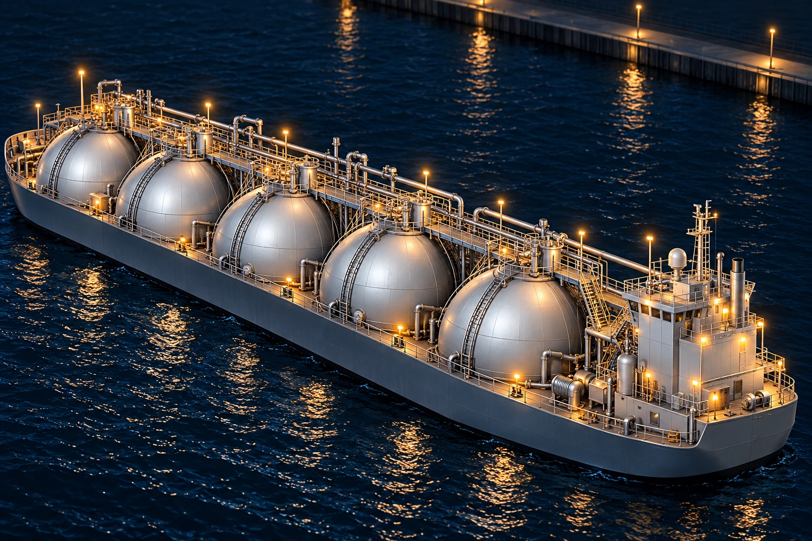

ОСПТ «Релайн» / Морская инфраструктура
Грузовые резервуары судна
Сферические ёмкости и палубное оборудование
Приближённый вид резервуаров, трубопроводов и узлов крепления на палубе.
Рассмотреть деталиОСПТ «Релайн» / Морская инфраструктура
Сферические грузовые резервуары
Форма ёмкостей и расположение на судне
Крупный план округлых грузовых ёмкостей. Видны их взаимное расположение, металлическая обшивка и проходы между резервуарами.
← К общему виду объектаОСПТ «Релайн» / Морская инфраструктура
Поверхность резервуаров
Обшивка и соединения
Приближение металлической поверхности ёмкостей: стыки панелей, швы и верхние узлы резервуаров.
← К общему виду объектаОСПТ «Релайн» / Морская инфраструктура
Трубопроводы и арматура
Связи между ёмкостями
Трубопроводы проходят вдоль ряда резервуаров. В приближении видны повороты труб, соединения и палубная арматура.
← К общему виду объектаОСПТ «Релайн» / Морская инфраструктура
Лестницы и площадки обслуживания
Доступ к палубному оборудованию
Лестницы, ограждения и переходы повторяют форму резервуаров и соединяют площадки обслуживания.
← К общему виду объектаОСПТ «Релайн» / Морская инфраструктура
Крепления и палуба
Детали размещения оборудования
Нижняя часть резервуаров и прилегающая палуба показаны крупнее: видны элементы крепления, ограждения и соединительные узлы.
← К общему виду объекта